Estimativa de Preços [ Voltar ]Utilize este formulário para definir produtos para os quais se deseja uma cotação de preços. O formulário "Estimativa de Preços" encontra-se dentro do menu "Compras". 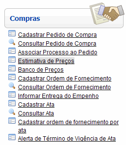
Ao clicar no nome do formulário, o sistema exibirá a seguinte tela: 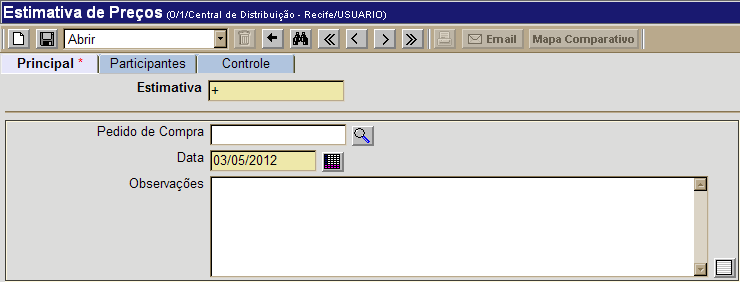
Este
manual contém os passos para exibe o passo-a-passo para as seguintes
funcionalidades: Criar estimativa de preços1º Passo: informe os dados principais da estimativa.
2° Passo: clique no botão
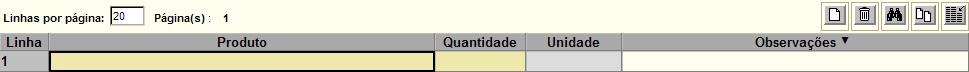
Após informar os dados do produto,
clique no botão
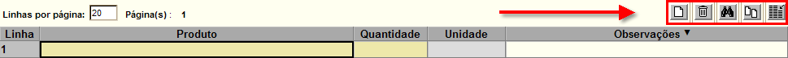
Os outros botões disponíveis são:
5° Passo: clique na aba "Participantes" para cadastrar os participantes que comporão a estimativa de preços. Na parte inferior do formulário é exibida uma lista sugerida de fornecedores associados aos produtos da estimativa. 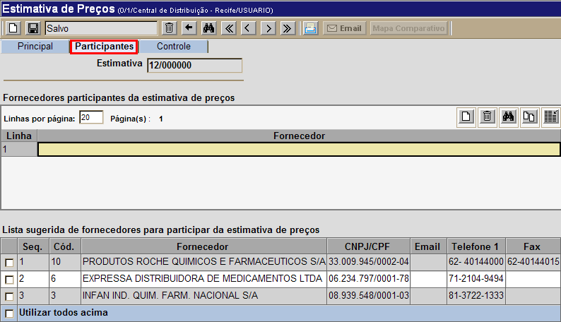 O sistema gera a lista de sugestões com as empresas que:
É possível inserir manualmente os códigos dos participantes desejados na grade ou, de uma maneira mais simples, apenas clicar nas caixas de seleção dos fornecedores desejados (ver imagem abaixo). Caso você queira inserir TODOS os fornecedores sugeridos na lista de participantes, selecione a opção "Utilizar todos acima", disponível no final do formulário. 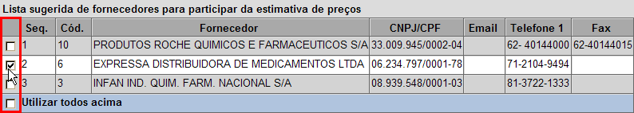
6° Passo: clique no botão Para enviar a solicitação por email, clique no botão . A seguinte tela será exibida: 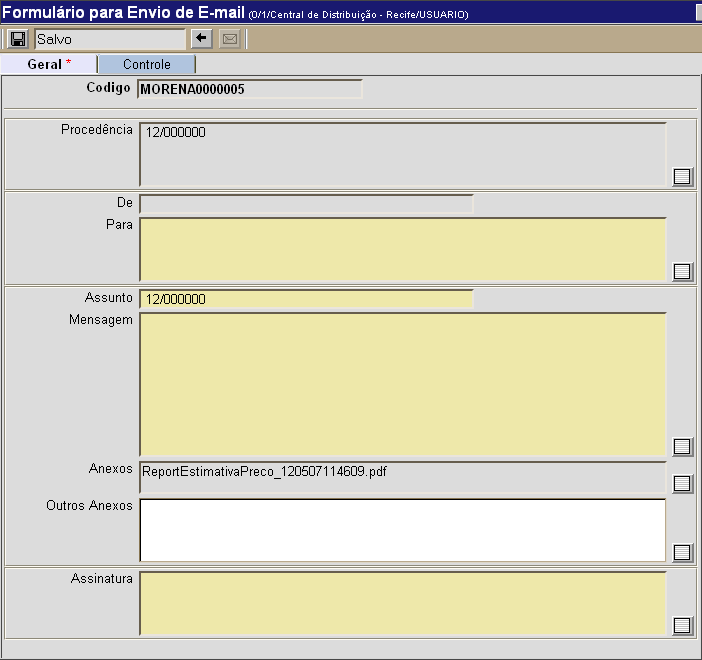
Observação: O sistema só envia e-mail para os fornecedores que possuem um endereço de e-mail cadastrado no Cadastro de Fornecedores.
Cadastro e seleção de propostasApós receber dos fornecedores a cotação dos produtos, é necessário cadastrá-las do sistema para poder gerar o mapa comparativo. 1º Passo: para localizar a estimativa de preços que deseja consultar, clique no botão 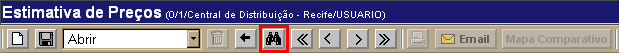
Na tela de pesquisa de registros de estimativas de preço, informe os dígitos iniciais do código da estimativa, nome, pedido de compra ou processo para que o sistema retorne automaticamente todas as transferências correspondentes. Para mais informações sobre outros recursos e funcionalidades da pesquisa, favor ver o manual Introdução ao Sistema. 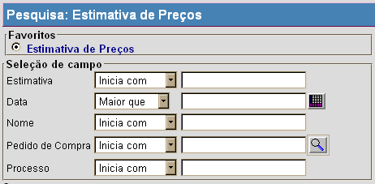
Após localizar a estimativa desejada, selecione-a com um clique. O cadastro da mesma será aberto com todas as suas informações. 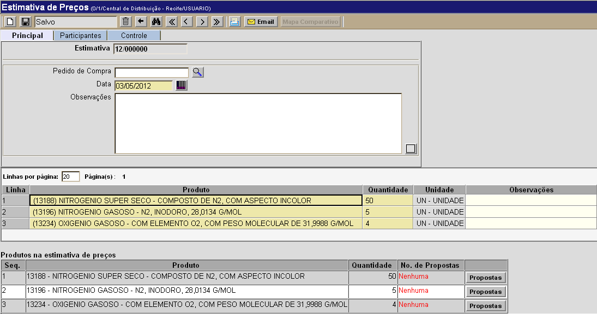
2° Passo: clique no botão para cadastrar as cotações de preços enviadas pelo fornecedor. Ao clicar no botão, a seguinte tela será exibida: 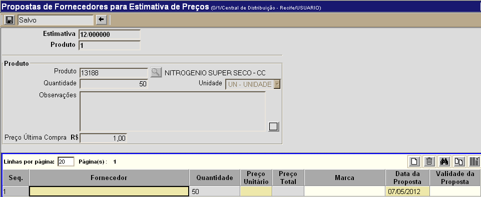
3º
Passo: informe os dados da proposta.
Na grade devem ser inseridas as propostas dos fornecedores para o
produto selecionado. Após informar o código do fornecedor desejado, preço, marca e validade da proposta, clique em Observação:
na parte inferior da tela são exibidos os participantes da estimativa.
Você pode clicar em um deles para que seja adicionado automaticamente à
grade de fornecedores. Depois de selecionar todos os fornecedores desejados, clique no botão 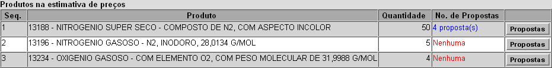
Se for necessário cadastrar as propostas de outros produtos na estimativa de preços (como é no caso no exemplo acima), repita os passos acima. 5º Passo: clique no botão para visualizar o
resultado final da estimativa de preços. Para imprimir, clique no botão Observação: para a elaboração da estimativa de preços, é necessário que exista pelo menos uma proposta de preço para cada produto.
|


 [Imprimir] da barra
de botões para visualizar a tela de impressão do pedido de
cotação. Par
[Imprimir] da barra
de botões para visualizar a tela de impressão do pedido de
cotação. Par [Imprimir] do navegador.
[Imprimir] do navegador.